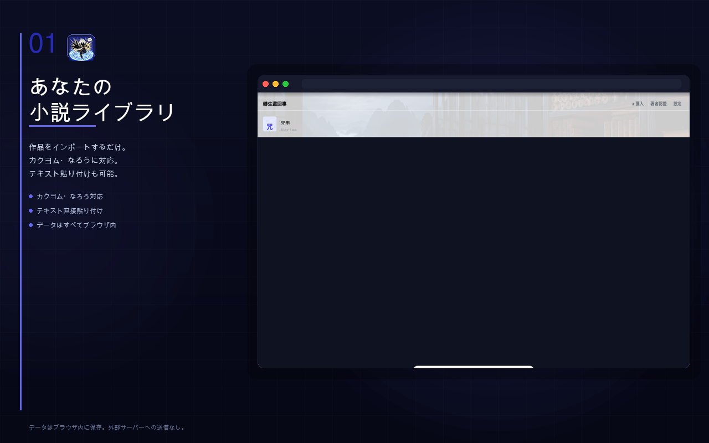
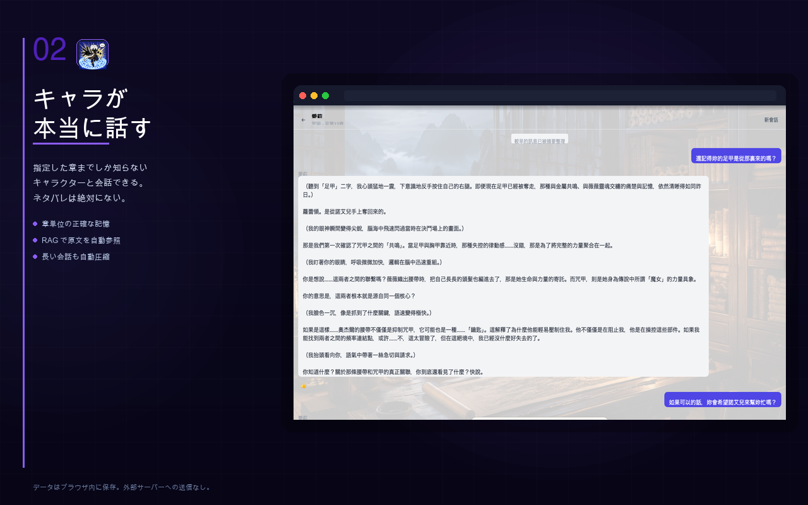
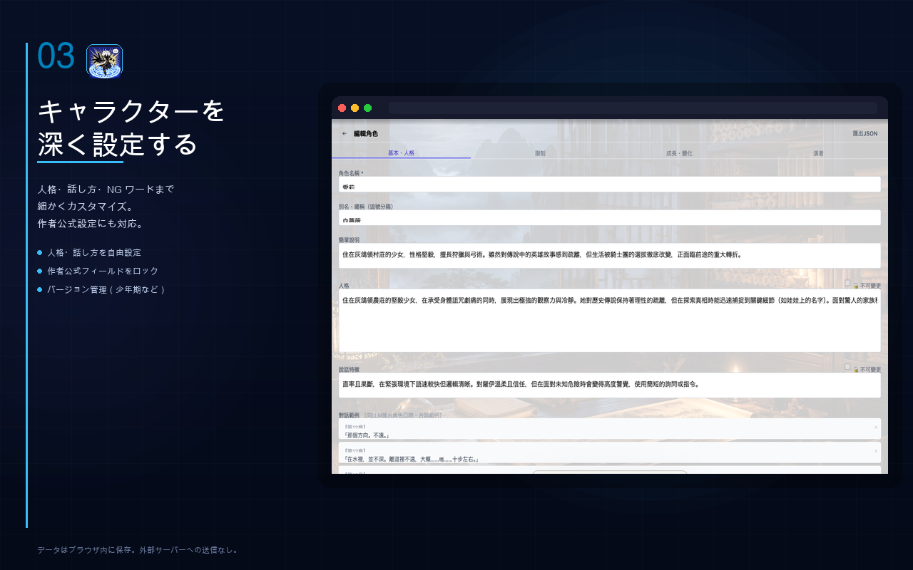
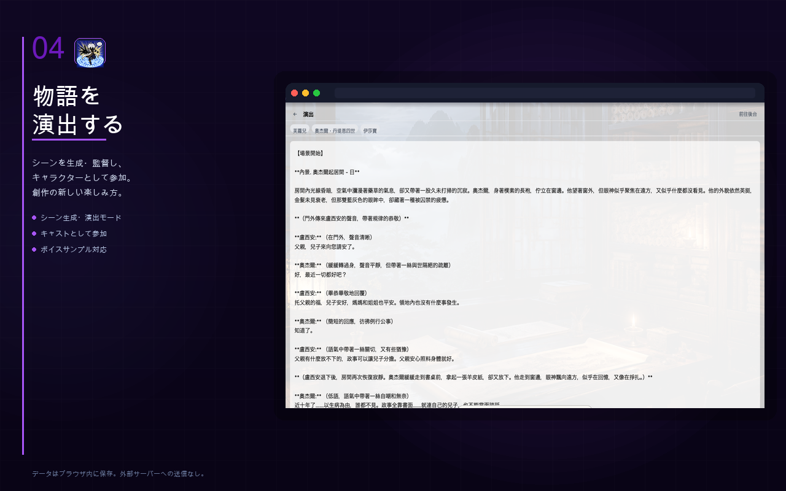
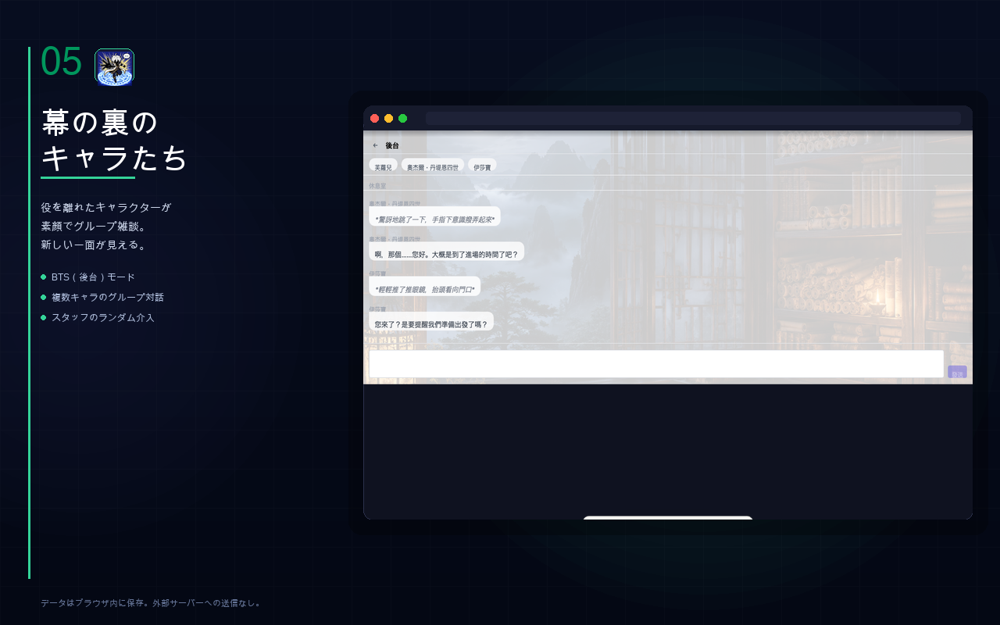

カクヨム・なろうの小説キャラクターと会話できる Chrome 拡張機能。
章単位の正確な記憶、RAG、演出モード、BTS モード搭載。
データはすべてあなたのブラウザ内に。
OpenAI · OpenRouter · Ollama · 任意の OpenAI 互換エンドポイント対応
Features
ただのチャット bot ではありません。キャラクターが本当に「その世界の住人」として話してくれます。
How to use
Screenshots




